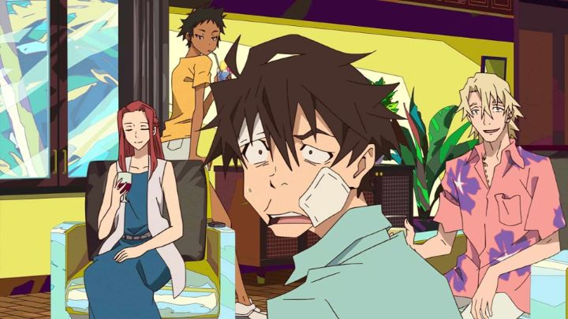

"Great Pretender" was probably the anime I most looked forward to in 2020. I was a little nervous though, given that this was yet another Netflix-exclusive series. Those mixed feelings were less about being forced to log into Netflix to see it, but out of gear that the show would in fact be good, and having to accept that while being denied a home video release. There have since been some exceptions, but many of the anime produced by Netflix remain exclusive to the platform, a unique strategy that no other streaming provider utilizes, forcing consumers to pay the monthly subscription should they want to revisit the show today, a month later, or a decade later. It's practically a scam, one that the public has simply given into as it's run before our eyes.The premise and staff of "Great Pretender" are enough to give me tingles. I love a good crime caper with con-men swindling bad guys and getting away with it, and I like globe-trotting anime that leave the Japanese high-school for settings like America or France. I originally thought the show had some shared director or writer with "Baccano!" or "Durarara," but that appears not to be the case... looking at the two shows, my mistake would be forgiven. It's animated by Wit Studio as an original story, one of Japan's most exciting new studios, joining their catelog alongside "Attack on Titan," "The Ancient Magus' Bride," and "Vinland Saga." While the wild story of "Baccano!" might be the easiest to compare the show to, the closest show I can remember to it would actually be "Black Lagoon," another show of conflicting mutli-lingual gangs, high stakes and increasing tension when a plan goes awry. The youthful lead is Edamura, a small-time Japanese con-man that's really good at what he does, selling fake equipment to household wives or swapping wallets from tourists. He tries to pull his trick on a blonde man from France, only to be dupped himself. Unwilling to accept defeat, he follows this gentleman thief (Laurent) back to America to get his money back, and they make a wager towards who can pull off a bigger con. Edamura is caught off-guard to see Laurent already with a plan in motion, utilizing Edamura to pull it off: to sell a fictional recreational drug from a "talented Japanese scientist" to a Hollywood mafia leader, possibly earning more than 100x what Edamura had ever made in his dishonest career.The Japanese kid won't go down easy though, paying attention and trying to one-up the con to earn himself a larger piece. And so the game is afoot, without either player filling in the other on the plan, a test of their acting and improv skills. And things get dangerous. It's massively fun to watch play out, and Edamura ultimately realizes he's outmatched when Laurent turns out to have dozens of associates around the world helping him carry out the plan. It turns out almost everyone on screen is trying to con someone, double and triple-crossing each other, until everyone is confused about who's left holding the money. And that's just the first arc! After that 5-episode story, Edamura seems to accept defeat and learn the error of his ways, accepting a reduced prison sentence and trying to go clean. But a few years later, he gets sweapt back in by the charming Laurent and his machinations, over and over. There are four arcs total in the 23-episode run, each on a different target in a different country, and with a big backstory focus on one of the team members. Aside from Laurant, there's the beautiful but violent Abigail, the experienced and sultry Cynthia, and a host of others. Abigail, being the only dark-skinned character and originally being born in Iraq, steals the show with a complex backstory and a "pull-no-punches" attitude.  By the final arc, both Edamura and Laurant have gone so far into their own con, both working with and against each other, that the viewer could be fooled into thinking they're both lost to their madness. It's revealed that some supposedly dead characters are alive, and that not only did wild events go according to plan, but that the plan went according to multiple prior and future plans, making up a larger scheme multiple years in the making. Unbelivable? Yes, but it's a crazy ride, one where you'll end up awe-struck.The individual arcs are very well written and planned, but don't match up to the memorable first arc. Pacing is generally an issue too; one arc maxes out at 9 episodes long, probably twice as long as it needed to be to set up backstories. The show likes to take it's time to carefully set up all the pieces, and it's usually in just a few episodes that things come crashing to a climax. Had things been a little tighter, "Great Pretender" could have been the most entertaining anime of the decade. The script must have been a challenge, as it's a plot point when characters speak Japanese, English, French or Chinese. The show itself acknowledges this, using Japanese and "Engrish" in the first few minutes of the first episode (even in the English dub) before a sign appears to explain that the rest of the show will simply be translated in the viewer's language (for me, dubbed mostly in English). Somehow, it works well and makes the show much more interesting than it might otherwise be.Music seemed to be a big deal for the anime, made clear with a "Catch Me If You Can"-style opening animation with a jazz score reminiscent to "Cowboy Bebop," and a license to use Freddy Mercury's "Great Pretender" as the ending theme. Beyond that, there's one unique English song in each of the four arcs. However, those English songs get reused within the arc far too often... the entire score seems to be made up of a few short pieces, in fact. I lamented it didn't lean more into the jazz-funk songs like the opening promised. And finally, the visuals look great. Stylized character designs pop with personality, looking similar to the designs Studio Khara uses in their work. Bold and vibrant colors for both characters and backgrounds are striking. The promotional poster for "Great Pretender" is exactly the type of art I'd be proud to hang in a bedroom. Animation is a bit more standard however (a missed opportunity to go the extra mile in certain scenes, like the decade-old "Baccano!" did), a recurring issue I have with Studio Wit, perhaps still exhausted from their work on "Attack on Titan.""Great Pretender" isn't quite a non-stop thrill ride, but the individual stories are excellent, and the high points are really high. It's a show meant for binge-watching (I did the entire thing within 16 hours, with a couple naps in the middle), and I can't imagine viewers being patient to wait for a new episode week to week on traditional television. Netflix is a great home for it, but I'd love to steal it away to admire on my personal shelf.
- "Ani" More reviews can be found at : https://2danicritic.github.io/ Previous review: review_Grave_of_the_Fireflies Next review: review_Grimgar_-_Ashes_and_Illusions